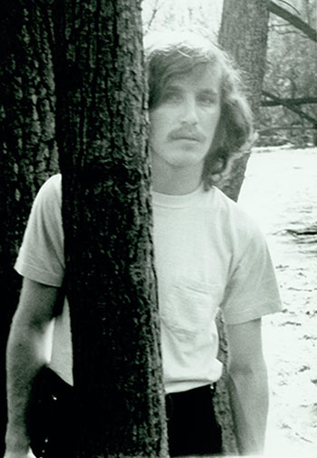
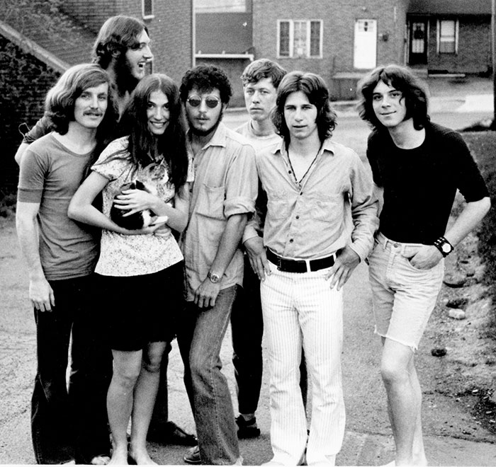
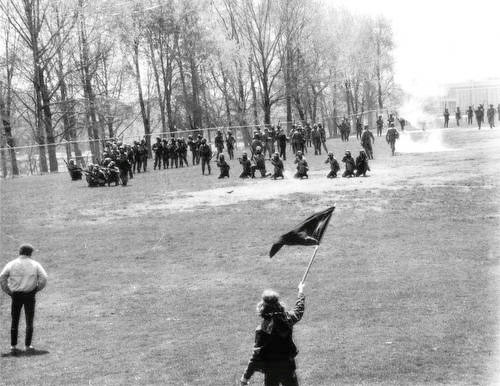

He mourned the loss of his childhood friend. It shook him to the very core. Bill’s brother George was one of Alan’s college roommates. The three grew up together, and their lives were deeply intertwined the way that only the closest of friends could relate to. But, Alan also spent that time thinking. Thinking and reevaluating his stance on the war. Alan had never really questioned the war. His dad was a private first class in the U.S. Army infantry in the late part of World War II, serving at Leyte Gulf in the Philippine Islands. His mom had nursed wounded soldiers. Alan, along with his parents, had unwaveringly supported the war. In his mind, it was all very black and white. Either you supported the war or you didn’t. You were either for the president or against the president. But after losing his beloved friend Bill and watching Bill’s family suffer, Alan felt himself changing.
The mounting deaths and casualties were beginning to take a toll on him, his friends, his family and the faculty at his school. The war wasn’t just a far off event anymore. Friends who had served were coming home, and they were coming back wounded. Post-traumatic stress disorder, emotional scars and physical wounds were coming back with them. Alan was deeply saddened that people he grew up with were coming back home so messed up. Perhaps one of the saddest parts was that many of those who had gone to Vietnam had left believing they were serving a higher purpose.
After attending Bill’s funeral, Alan could feel the frustration and helplessness rising inside him, and he knew that joining the anti-war activists at his school was the right thing to do. Alan didn’t consider himself one of the militant radicals that the community surrounding his school complained about to the authorities. Sure, he looked like the typical dirty hippie with his long hair, which people often complained about, but he was just a normal hard-working, Midwestern kid from a middle class family. While other kids partied or went on vacation, his summers were spent working long days at the nearby factory so that he could save up enough to pay for his tuition. At the end of April, when he began working with the anti-war activist group at his school, none of the faculty found him to be threatening. He had never skipped class to go to anti-war rallies, and he had never participated in any of the violent acts that led to the Ohio National Guard being commanded to restore order at Kent State University.
Around midnight, the most radical of the student protesters had broken the windows of banks and several other businesses located in the downtown area. But Alan and his closest friends weren’t involved, and the thought hadn’t crossed his mind to join those protesters. His days were usually spent with his sweet-natured, Catholic girlfriend, who he dated during his first four years at Kent.
The Ohio National Guard showed up on the campus that day. At first Alan and his friends didn’t think much about it. The guardsmen were pretty friendly with some of the students and they seemed to not want to be there. Alan didn’t want to start trouble with anyone. He told himself to stay cool and to stay away from them to avoid a problem. The guardsmen spent the night sleeping on the football field.
A mystery occurred. The ROTC building was set on fire. To this day, no one knows who started the fire. Alan still believes it was done by one of the more militant, radical protesters on campus. The problem was the protesters were really comprised of two groups, those who wanted to lash out and those who just wanted to speak their mind peacefully.
Things took a turn for the worse. There was palpable tension between the guardsmen and the students on campus. Alan sat in his bedroom studying when he received a phone call around 10 p.m.
“Hey, man, you’re never going to believe what happened. Some guy tried to leave campus around 8 to go meet his girlfriend, and the guard told him curfew was in effect. The guy started arguing with the guard, and the guard bayoneted him. Then a group of guardsmen headed over to the library where they started yelling at a bunch of girls and one of the girls was bayoneted by a guard.”
Alan couldn’t believe what he was hearing. The guard was bayoneting students? Curfew was in effect? Female students had been viciously stabbed by men? This campus was his home, and the National Guard was acting like they lived in Nazi Germany. He soon learned he wasn’t alone in his feelings. Many other students were resenting the unwelcome presence of the guardsmen on campus.
The students decided they would still have their anti-war rally, which had been planned as soon as they learned Nixon was going to invade Cambodia. The crowd of 300 soon grew to 1,500, but some of those people were merely spectators. Various faculty members had passed out leaflets discouraging the students from attending the rally, but the students were fed up. They felt provoked and justified in staging their rally, the guardsmen were violently overtaking their campus and martial law had not been declared. Alan grabbed the flag he made to honor his friend Bill’s memory. As he waved his flag in front of the guardsmen he cried out in anguish “I am against this war. My friend died last week. That is why I am here.” The guardsmen seemed to think he was taunting them, and they began moving towards him. At that moment, Alan thought to himself ‘They won’t do anything to me. I haven’t done anything wrong. I have a right to peacefully assemble with others and use my freedom of speech.’ As Alan started moving away from them, the next comforting thing he told himself was that ‘They won’t fire, and if they do shoot at me, they will shoot blanks.’
As Alan tried to get away, the crowd dispersed quickly. People ran to their dorms or sought refuge in the restrooms. They washed their faces because of the tear gas. Some of the students that were tear gassed weren’t even protesting, they were just walking to class.
Alan hid himself behind an oak tree that was about 12 inches wide. He still thought maybe the guardsmen were just trying to scare the students. As the guardsmen formed a tight huddle, Alan cussed at them. They huddled for about 10 minutes, then marched up a hill. Alan thought they were leaving and the whole ordeal was over. As they reached the top of the hill, 12 of the guardsmen turned around in unison, and began shooting their M1 rifles. A bullet tore through Alan’s wrist. At first he was completely shocked. He had just been shot in broad daylight on his college campus. The pain was excruciating and demanded immediate relief. But he barely had time to think about his wrist, because the bullets kept coming. For exactly 12.53 seconds Troop G shot their rifles. Alan was the first to be shot. The oak tree he hid behind proved to be a very faithful friend as it absorbed several of the bullets. Alan’s friend Tom was close by, and was shot in his foot. Tom screamed in agony and attempted to get up.
When the firing ceased, the Ohio National Guard calmly finished walking up the hill and disappeared behind a building as if nothing happened. There was a full, stunned moment of silence before pandemonium broke out. Alan looked down at the ground and was horrified by all the blood. The wounded were crying and screaming out “Help me. I need an ambulance. Oh God, I need an ambulance.” A football player rushed over, picked Tom up and carried him to safety. Once Alan knew Tom was being taken care of, he went into the home economics building, which was the closest building to him. One of the home economics students gingerly applied a washcloth to his wound. All Alan kept thinking was that he needed to get to the hospital immediately.
He walked out to the main road off campus and flagged down the first car he saw. The driver was a graduate student and agreed to take him to the hospital after hearing the horrible news. As they drove to the hospital Alan tried to tell him what happened but he thought he might pass out from the pain. When Alan arrived at the hospital, he walked past an ambulance with its door open. His friend Jeff Miller was dead in the back of the ambulance. A bullet violently ripped through his face. When Alan saw Jeff lying there, he thought he looked like a zombie. Jeff was known for always smiling his famous, crooked smile. Alan didn’t realize Jeff was dead. He naively assumed the doctor would be able to fix Jeff’s punctured face, giving him good plastic surgery so he would one day smile again.
Alan thought Jeff was just unconscious and as he walked by, he whispered “Jeff, Jeff, wake up.” This all seemed like a nightmare. He still couldn’t accept what had happened as reality.
Alan was placed in a private room with another one other student that he didn’t know. They were told they would be treated last because they had the least serious injuries. Alan lied on his stomach for about one hour until a doctor could see him. The hospital was filled with the cries of wounded students. As he lay there on his hospital bed, he replayed the incident over and over in his mind.
We weren’t doing anything wrong, how did the whole thing erupt into a deadly shooting spree? Mass murder just took place on campus. Is my sister alive?
Alan’s sister Chic had been at the scene of the crime. As soon as he started thinking about her, a doctor came in and told him the names of the four students that were dead, and the names of the nine that were wounded. His fears were assuaged. Chic wasn’t on the list. He barely registered this when an overwhelming sadness engulfed him. Two of the dead were females.
Several years later, Alan gave a speech at Kent State University. One of the guardsmen involved in the ordeal confronted him and expressed regret about what happened. The guardsman wanted to shake his hand but Alan wanted to refuse. 'I'm not going to shake his hand,' he thought. However, after reconsidering, he decided to reach out and accept the gesture.